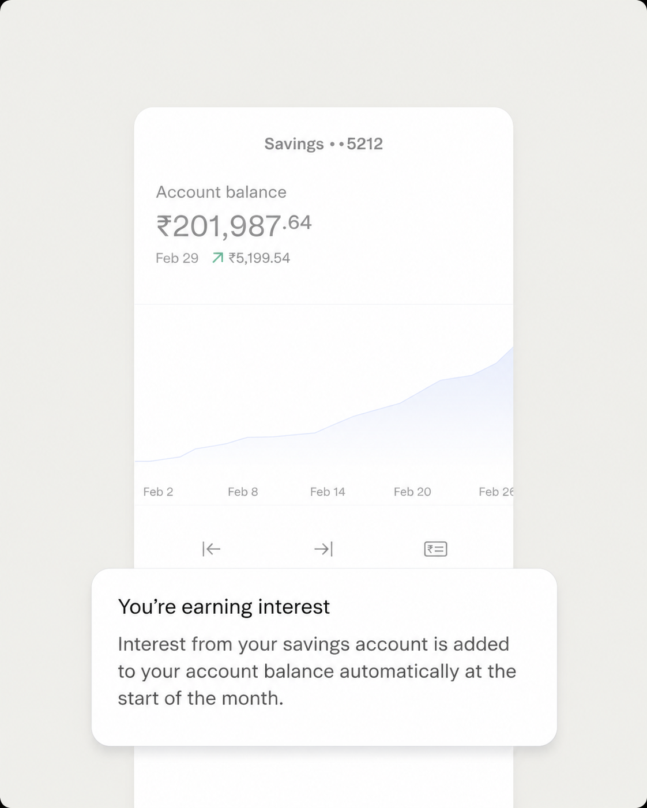
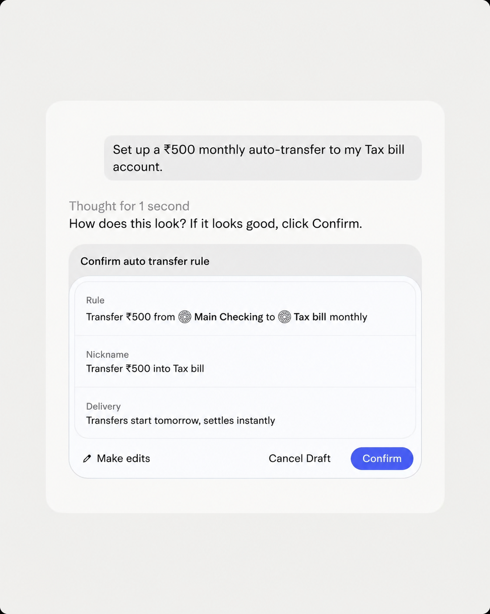

A loan against the gold you already own
Pledge your gold jewellery or coins for a loan, often within hours of appraisal — your gold stays in secure storage for the loan tenure and comes back the moment you repay.
Everything you need to borrow against your gold
Fast disbursal
Funds can reach your account within hours of your gold being appraised and your documents verified.
Pledge physical gold
Loans are against gold jewellery and coins you already own — a different mechanic from buying new digital gold.
Safe, insured storage
Your pledged gold stays in secure, insured partner-NBFC vaults for the entire loan tenure.
Transparent valuation
Your gold is appraised in front of you against the day's rate, so you see exactly how the loan amount is worked out.
Flexible repayment
Pick bullet repayment, interest-only EMIs, or a standard EMI schedule — whatever fits your cash flow.
Get your gold back
Repay in full at any point in the tenure and your pledged gold is released back to you right away.
Not the same as digital gold
Raushco has two different gold products — here's exactly how they differ.
Gold loan — borrow money against gold jewellery or coins you already own. Your gold is pledged as collateral and released back to you once you repay.
Gold & Silver — buy new, insured 24K digital gold or silver from ₹1. Nothing is borrowed, and there's nothing to repay.
From appraisal to disbursal, in one visit
- Get your gold jewellery or coins appraised on the spot, against the day's rate
- Complete your KYC and get a loan offer based on your gold's weight and purity
- Funds reach your account the same day, once documentation is complete
Repay your way, get your gold back
Choose bullet repayment, interest-only EMIs, or a standard EMI schedule — whatever suits your cash flow. The moment your loan is closed, your pledged gold is released back to you in full.
Open account
“Festive stock has to be on the floor before the rush starts, not after. I got my gold coins appraised in the morning and had the loan in my account by evening — nowhere close to how long a regular business loan would've taken.”
Lakshmi Pillai
Boutique owner
Kochi
Personal
More ways to put what you own to work

Frequently asked questions
Gold jewellery and coins, typically 18–24 karat purity. Studded jewellery is valued only for its gold content — stones and other attachments aren't included in the loan amount.
It's appraised in person against that day's gold rate and its tested purity. You see the appraisal happen and get a receipt listing exactly what's pledged before any loan is disbursed.
Gold loans are disbursed and serviced by RBI-regulated NBFCs — we're exploring this with gold-loan specialists such as Muthoot Finance and Manappuram Finance. How much you can borrow depends on your gold's weight and purity, within the loan-to-value limits your lending partner sets under the RBI's gold-loan norms.
Yes — pledged gold is held in secure, insured vaults for the full loan tenure and released back to you as soon as the loan is repaid in full.
You can choose bullet repayment, interest-only EMIs, or a standard EMI schedule. If a loan stays unpaid well past its tenure and any grace period, the lending partner can sell the pledged gold to recover the outstanding amount, as set out in your loan agreement.
Raushco is a fintech platform, not a bank. Gold loans are disbursed and serviced by our partner NBFCs, not held or lent directly by Raushco.
Your gold is already worth something. Borrow against it.
Open a Raushco account and get a gold loan offer in minutes.
Open accountDisclaimers and footnotes
Raushco is a fintech platform, not a bank. Gold loans are disbursed and serviced by partner NBFCs, not by Raushco. Partner institutions named on this page, including Muthoot Finance and Manappuram Finance, are illustrative of the kind of institution Raushco may work with for this product and do not represent a confirmed or existing partnership.
- Loan amount, interest rate, and tenure are decided solely by the lending partner, based on your gold's weight and purity and the loan-to-value limits set under the Reserve Bank of India's gold-loan norms in force at the time — these are not fixed or guaranteed figures.
- Gold valuation reflects the lending partner's own appraisal and the prevailing gold rate on the date of pledge; it is not set or guaranteed by Raushco.
- Pledged gold that remains unredeemed beyond the agreed tenure and any grace period may be sold by the lending partner to recover outstanding dues, as set out in the loan agreement.